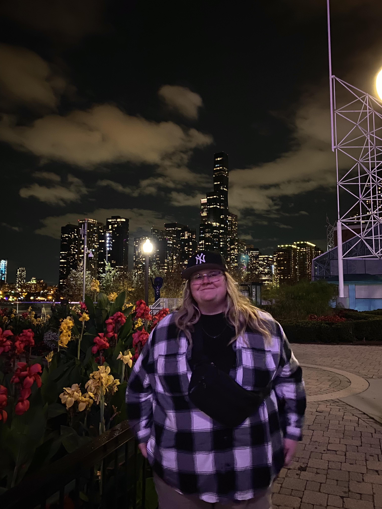

About Me
My name is Mallory Shea. I am from Galesburg, Illinois. I went to ROWVA High School and now attend Illinois State University. I am going into my fifth year here.
I have a passion for listening to and making music. I loved music growing up and have always known that I want to persure a career somewhere in music. In college, I started discovering videos about music production and I instantly fell in love. I love all different kinds of music. I would not say that I have a genre preference. It depends on the day!
I am graduating Illinois State University with a degree in Audio and Music Production. Unlike some in my field, my dream career isn't out in LA being a top-shot music producer. My dream career is working with music. I want to work for someone who values music the way that I do. Wherever I end up, I want to make a positive impact on lives with music.